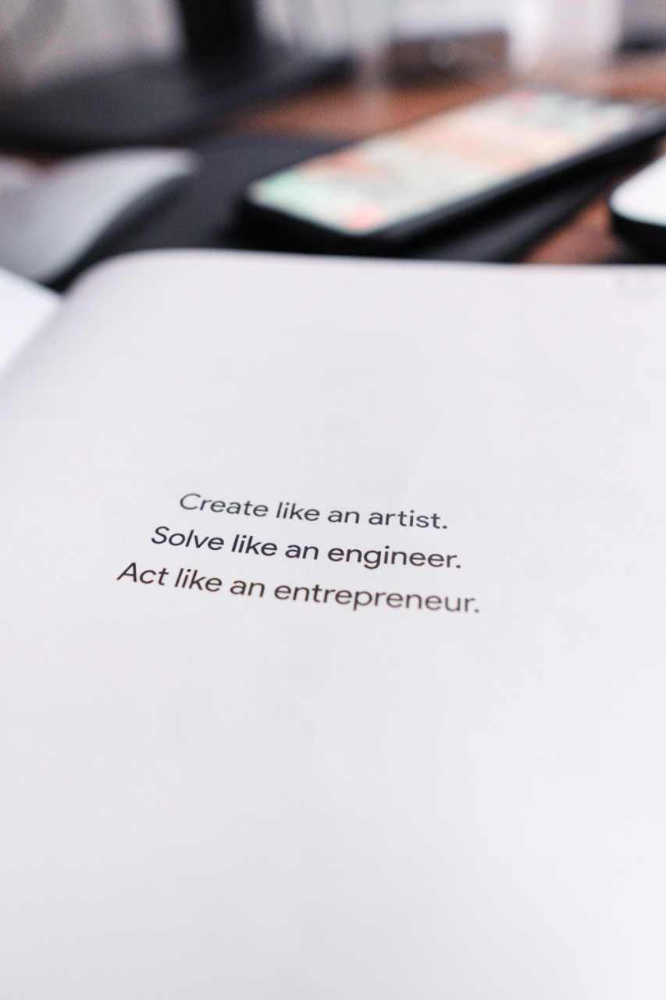

We all talk about Productivity, Creativity, Positivity…but what about CRAZITIVITY?
थोड़ी craziness तो होनी चाहिए 😅🙃
Why?
1.Crazy is a side effect of being awesome
2.It makes life fun & light
And, now that we’re talking about life & light, here’s something to know
“Know what sparks the light in you. Then use that light to illuminate your world.”🔦
Have you ever given it a thought, how our world is changing? 🌐
Not the outside world, but the one we carry within. How with experience, maturity, time we start giving importance to quality and not quantity.
How many of you agree? Quality enhances our experiences!
